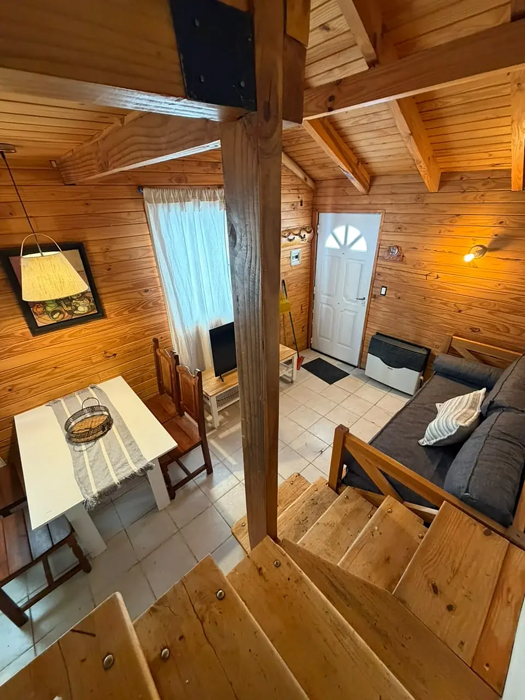

La Maison Departamentos en Caviahue

En pleno centro del pueblo, cerca de comercios y restaurantes
Departamentos para 3, 4 y 5 huéspedes
Cuatro departamentos en planta baja, cómodos y de fácil acceso, en pleno centro del pueblo. Cada uno tiene un dormitorio con cama matrimonial y está equipado para una estadía práctica: cocina completa, WiFi y TV con DirecTV.
Según la unidad, el living suma un sofá cama con cama marinera o un entrepiso con dos camas individuales, ideal para familias. Es pet friendly: tu mascota también es bienvenida.
Unidades y huéspedes
Departamento 1
hasta 3 huéspedes · Ideal para pareja con un niño: dormitorio con baño en suite y sofá cama.
Departamento 2
hasta 4 huéspedes · Dormitorio matrimonial; sofá cama y catre en el living.
Departamento 3
hasta 4 huéspedes · Dormitorio matrimonial; sofá cama y catre en el living.
Departamento 4
hasta 5 huéspedes · Dos ambientes con entrepiso de dos camas individuales y sofá cama.
Comodidades
- En pleno centro
- Cocina equipada: horno, microondas, cafetera y tostadora
- Smart TV con DirecTV
- WiFi
- Calefacción
- Aire acondicionado (deptos. 1 y 4)
- Sábanas, toallas, shampoo y acondicionador
- Secador de pelo
- Estacionamiento
Check-in desde las 14:00 · Check-out hasta las 10:00. Acepta mascotas.
Tu lugar en Caviahue
Departamentos, cabañas y hostal boutique para disfrutar de la Patagonia con tu familia, amigos o pareja.